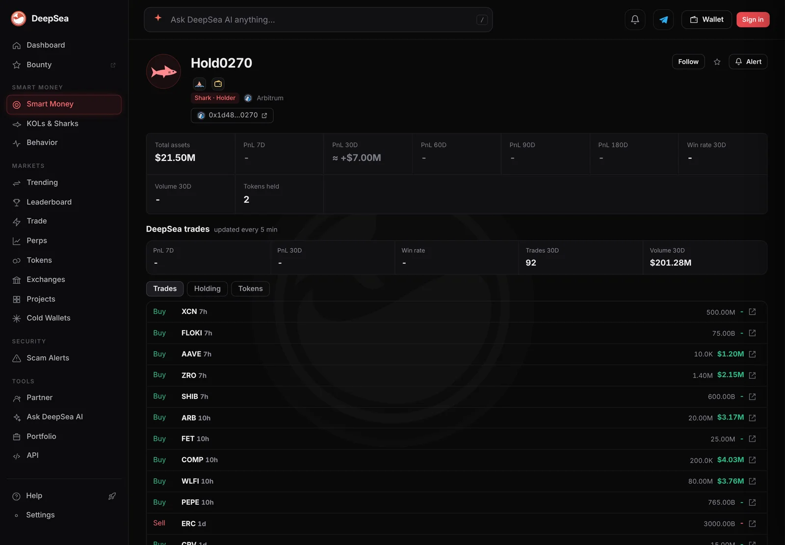

One wallet bought $3.17 million of ARB in one trade, a day after its $3.29 million CHIP buy
DeepSea's 24-hour table shows Arbitrum sharks bought $3.65 million of ARB and sold $771. Most of it came from one wallet that Etherscan shows holding 135 million ARB.
Key points
- Shark wallets on Arbitrum bought $3,646,224 of ARB and sold just $771 in the 24 hours to 12:41 a.m. ET on November 12, 2026, DeepSea's live flow table shows.
- One wallet, ending in 0270, bought $3,172,039 in a single trade, 20.00 million ARB, and sold nothing. That is 87% of all shark ARB buying in the day.
- Etherscan's multichain view shows the wallet holding about 135.48 million ARB on Arbitrum One, worth about $20.4 million. ARB traded at $0.1506 on CoinGecko, down 7.7% in 24 hours.
 What DeepSea's data shows
What DeepSea's data shows
DeepSea's 24-hour flow table (built 12:41 a.m. ET) puts ARB, Arbitrum's own token, at the top of shark buying on the network: $3,646,224 bought and $771 sold. Sharks are large, active wallets that DeepSea tracks.
Most of that came from one place. The wallet ending in 0270 made one trade worth $3,172,039 and sold nothing. Its DeepSea page shows that trade as a buy of 20.00 million ARB, about $0.159 per token, and $21.50 million in total assets on Arbitrum. The next biggest Arbitrum shark in the table, a wallet ending in 116d, bought $692,436 across 4 trades, with no sales.

Data: DeepSea (desea.io), checked November 12, 2026, 12:42 a.m. ET.
Who is the wallet?
New to the tools? Read what DeepSea is.
No public name. Etherscan, the main Ethereum block explorer, shows it as an ordinary wallet (not a smart contract) with no name tag. Its multichain view puts the address at about $1.39 billion across networks, including 284,814 ETH on Ethereum. On Arbitrum One it lists 135.48 million ARB (about $20.4 million) and 100 million CHIP, the USD.AI token (about $3.17 million).
Etherscan says the wallet was first funded 252 days ago by an address it tags Robinhood 5, and that it received 11.99 ETH from one tagged Robinhood 2 on November 4. That shows where funds came from, not who owns the wallet. Who controls it is unknown.
This is the same wallet that bought $3.29 million of CHIP in one trade a day earlier.
Where the ARB came from
DeepSea records the move as a purchase: one trade, $3.17 million in, nothing out. We could not open the Arbitrum transaction itself, so we cannot say which pool or seller filled it. Etherscan's recent list on Ethereum also shows two tiny incoming transfers from addresses that start and end like the wallet's own and like Robinhood 5's. Lookalike addresses like these are a common trick to make a holder copy the wrong address.
The ARB buy was not the wallet's only move. Its DeepSea page lists other large buys within hours, including COMP, WLFI, ZRO and AAVE, and 92 trades worth $201.28 million in 30 days.
ARB on Arbitrum, shark flows in 24 hours
US$ thousand
24 hours to 12:41 a.m. ET, November 12, 2026. Source: DeepSea live flows.

Price context
CoinGecko showed ARB at $0.1506 at 12:44 a.m. ET: down 7.7% in 24 hours, 7.9% in 7 days and 19.0% in 30 days. Its record high was $2.39 on January 12, 2024, so the token sits about 94% below it. Bitcoin was down 0.4% and ether 1.1% over the same day.
Why it matters
One wallet bought nearly all the shark ARB of the day while the price fell faster than the wider market. It now holds about 135 million ARB, Etherscan shows. The data shows the trade, not the reason for it.
LC Insight analysis
This section is our reading of the facts above, not a statement of fact.
- We think the pattern is the story: two single trades of about $3 million each, on back-to-back days, into two Arbitrum tokens that were both falling.
- A buyer this size can move thin order books, so how ARB trades in the next days is worth watching.
- Etherscan ties the wallet's first funding to an address it tags Robinhood 5. That shows where the money came from, not who controls a wallet worth about $1.39 billion.
What's next
- Whether wallet 0270 buys more ARB or moves its 135.48 million ARB
- Whether ARB holds near $0.15
- Any new single trades by this wallet on Arbitrum
Disclaimer. This article is based on public information and the sources listed below as of the update time shown. It is for information only and is not investment, legal or tax advice. Figures may change as companies and authorities publish new data.
Sources
- DeepSea, live flows by token and wallet, 24 hours (read November 12, 2026, 12:42 a.m. ET)
- DeepSea, wallet page for the address ending in 0270 (read November 12, 2026, 12:42 a.m. ET)
- Etherscan, address ending in 0270: type, funding, multichain holdings (read November 12, 2026, 12:43 a.m. ET)
- CoinGecko, Arbitrum (ARB) price and history (read November 12, 2026, 12:44 a.m. ET)